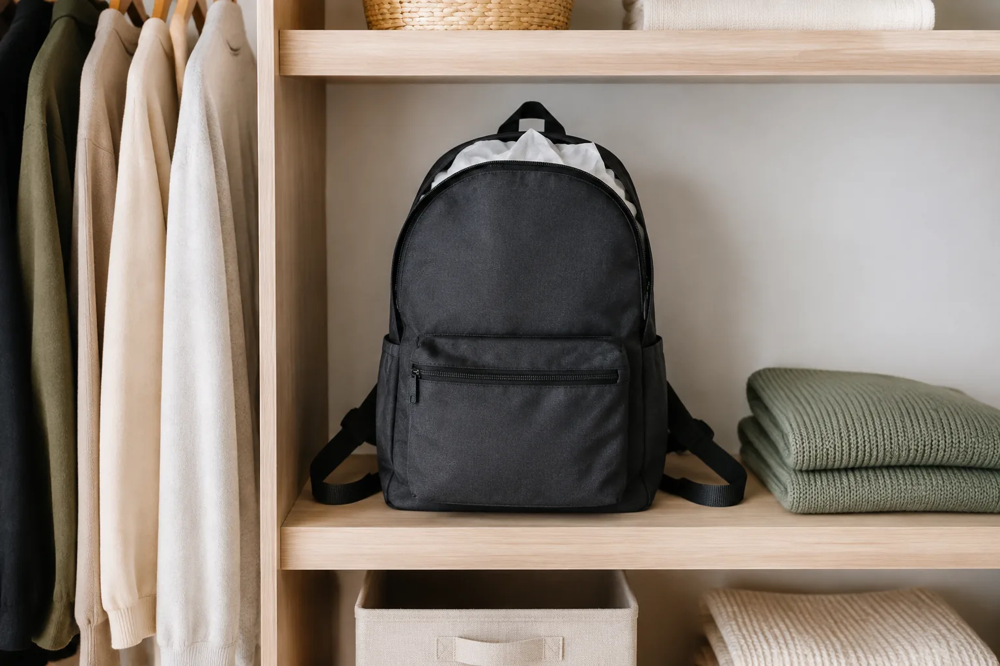

백팩 모양을 오래 유지하는 보관법: 비우기부터 충전재까지

한동안 쓰지 않을 백팩을 짐이 든 채 구석에 눕혀 두면 바닥과 옆면이 눌리고, 남아 있던 물건이 안감을 밀 수 있습니다. 보관 전에는 모든 칸을 비우고 습기가 남지 않았는지 확인한 뒤, 가방이 원래 형태를 무리 없이 유지할 만큼만 안쪽을 받쳐 주세요.
모든 칸을 열어 내용물을 비우세요
큰 수납칸뿐 아니라 앞주머니, 안쪽 지퍼 포켓과 옆주머니까지 차례로 확인합니다. 펜, 영수증, 간식처럼 작은 물건은 오래 남아 있으면 자국이나 냄새의 원인이 될 수 있습니다. 바닥 모서리의 먼지는 가방을 거꾸로 세게 털기보다 부드러운 솔이나 마른 천으로 조심스럽게 제거하세요.
표면과 안쪽을 완전히 말리세요
최근 비를 맞았거나 물병의 결로가 닿았다면 바로 보관하지 않습니다. 지퍼와 수납칸을 열고 통풍이 되는 그늘에서 충분히 말리세요. 드라이어의 뜨거운 바람이나 난방기 가까운 곳은 소재와 접착 부위에 영향을 줄 수 있으므로 피하고, 세탁과 세정제 사용은 반드시 제품 안내를 따릅니다.
젖은 가방을 다루는 자세한 순서는 비 오는 날 백팩 관리법에서 확인할 수 있습니다.
깨끗한 종이나 천으로 가볍게 받치세요
가방 앞판과 옆면이 안으로 접힌다면 깨끗한 흰 종이나 색이 묻어나지 않는 부드러운 천을 느슨하게 넣어 형태를 받칠 수 있습니다. 모서리를 억지로 밀어 펴거나 가방이 부풀 만큼 많이 채우지 마세요. 신문지는 잉크가 안감에 묻을 수 있어 피하는 편이 좋습니다.
- 충전재가 깨끗하고 완전히 마른 상태인지 확인하기
- 금속이나 뾰족한 물건 대신 부드러운 재료 쓰기
- 지퍼와 봉제선을 바깥으로 밀 만큼 채우지 않기
- 긴 끈은 접지 말고 자연스럽게 정리하기
손잡이에 걸기보다 선반에 세워 두세요
장기간 손잡이나 어깨끈에 걸면 가방의 무게가 좁은 연결부에 계속 실릴 수 있습니다. 내용물을 비운 가방은 바닥이 넓게 닿는 선반에 세우고, 옆의 물건이 누르지 않도록 공간을 남겨 주세요. 눕혀야 한다면 위에 다른 상자나 가방을 쌓지 않습니다.
빛과 습기, 먼지를 함께 살피세요
직사광선이 오래 닿거나 습기가 자주 차는 장소는 피합니다. 문이 닫힌 수납장이라면 가끔 열어 공기를 바꾸고, 장마철이나 계절 전환기에는 표면과 안쪽 냄새를 확인하세요. 비닐에 밀봉하면 환경에 따라 습기가 머물 수 있으므로, 덮개가 필요할 때는 제품 소재에 맞는 통기성 커버인지 살펴봅니다.
다시 쓰기 전 상태를 점검하세요
오랜만에 꺼낸 가방은 충전재를 모두 빼고 지퍼가 부드럽게 움직이는지, 손잡이와 어깨끈 연결부에 이상이 없는지 확인합니다. 먼지를 닦고 냄새나 습기가 남지 않았을 때 짐을 담으세요. 관리만으로 해결되지 않는 손상이 보이면 무리하게 사용하지 말고 판매처나 수선 전문가에게 문의하는 편이 안전합니다.
보관 전 체크리스트
- 모든 포켓에서 음식물과 작은 소지품을 꺼냈나요?
- 표면과 안쪽이 완전히 말랐나요?
- 이염되지 않는 부드러운 재료로만 형태를 받쳤나요?
- 가방 위에 다른 물건이 눌리지 않나요?
- 직사광선과 습기가 적고 통풍 가능한 자리인가요?
현재 가방의 형태와 수납이 생활에 맞는지 다시 비교하려면 좋은 백팩을 고르는 기준과 Himawari 제품 목록을 함께 살펴보세요.
참고·안내
자주 묻는 질문
백팩을 옷걸이에 걸어 보관해도 되나요?
장기간 손잡이나 어깨끈에 가방 무게가 집중되면 형태에 부담이 될 수 있습니다. 가능하면 내용물을 비운 뒤 넓고 평평한 선반에 세워 두세요.
가방 안에 신문지를 넣어도 되나요?
신문 잉크가 안감에 묻을 수 있으므로 깨끗한 흰 종이나 색이 이염되지 않는 부드러운 천을 느슨하게 사용하는 편이 좋습니다.
비닐봉지에 넣어 먼지를 막아도 되나요?
소재와 보관 환경에 따라 습기가 머물 수 있습니다. 완전히 말린 뒤 통풍이 되는 공간에 두고, 덮개가 필요하면 제품 안내에 맞는 통기성 커버를 검토하세요.